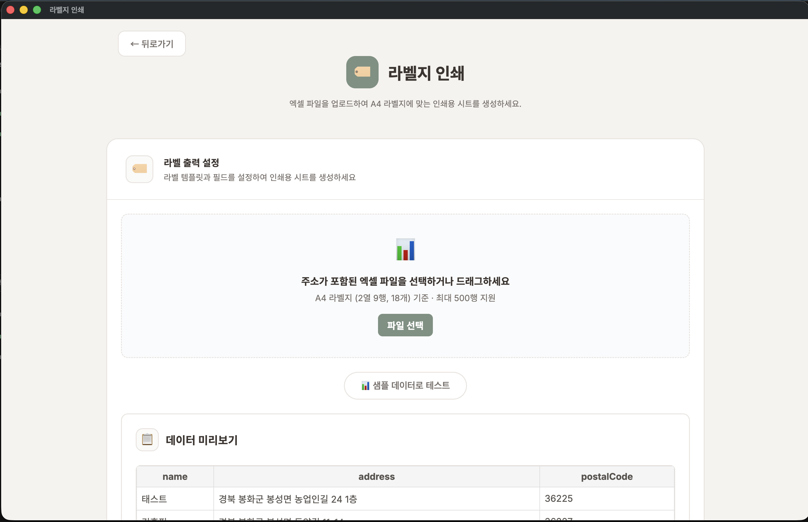
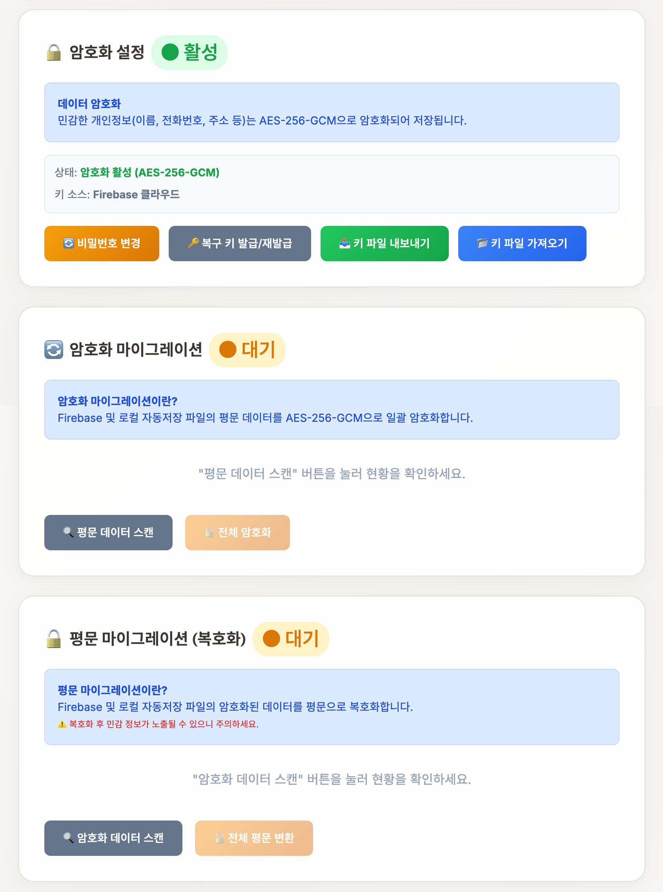

무엇인가요?
시료 접수 대장은 농업기술센터의 안전성분석 업무를 효율적으로 관리하는 디지털 시스템입니다. 종이 기반의 접수 대장을 전자화하여 시료 접수, 조회, 보관, 분석 등 전 과정을 손쉽게 관리할 수 있습니다.

메인 화면 - 5개 시료 타입 카드와 상단 툴바
주요 특징
- 완전 오프라인 지원 — 인터넷 없이도 모든 기능 사용 가능
- 클라우드 동기화 — 선택적 Firebase 연동으로 여러 PC에서 데이터 공유
- 데이터 암호화 — AES-256-GCM 방식의 강력한 데이터 보호
- 엑셀 호환 — 기존 엑셀 데이터 가져오기 및 내보내기 지원
- 현대적 UI/UX — 밝은 모드와 어두운 모드 지원
- 스마트 검색 — 고급 필터링으로 필요한 데이터 빠르게 조회
- 자동 백업 — 연도별 JSON 파일 자동 저장
- 라벨 인쇄 — 시료 라벨 직접 인쇄 지원
- 흙토람 내보내기 — 토양 검정 결과를 흙토람 일괄입력 서식(.xlsx)으로 내보내기
- 일괄 완료 처리 — 선택 항목 또는 전체를 한 번에 완료 처리
지원하는 시료 타입 (5가지)
| 시료 타입 | 설명 |
|---|
| 토양 | 논, 밭, 과수원, 시설재배 토양 분석 및 시비 처방 |
| 수질분석 | 지하수, 용수 수질 검사 |
| 잔류농약 | 농산물 잔류농약 검사 |
| 퇴/액비 | 가축분뇨 퇴비/액비 부숙도 검사 |
| 토양 중금속 | 토양 중금속 오염 검사 |
Windows 설치
- GitHub Releases 페이지에서 최신 버전의
.exe 파일 다운로드
- 설치 파일을 실행하고 설치 마법사 따라가기
- 설치 완료 후 바탕화면 바로가기를 통해 앱 실행
- 이후 자동 업데이트 지원
macOS 설치
- GitHub Releases 페이지에서 최신 버전의
.zip 파일 다운로드
- 파일 압축 해제
Applications 폴더로 이동- 시작 — 애플리케이션 폴더에서 실행
웹 버전 사용
웹 브라우저에서 접속하여 바로 사용 가능합니다.
https://[귀 기관].github.io/sample-log/
인터넷이 연결된 모든 환경에서 추가 설치 없이 사용할 수 있습니다.
첫 실행
앱을 실행하면 메인 화면이 나타납니다:
- 상단 바 — 동기화, 설정, 릴리즈 노트, 사용설명서, 다크모드 토글 버튼
- 중앙 — 5개 시료 타입 카드
- 각 카드를 클릭하여 해당 시료 타입의 접수/조회 페이지로 이동
시료 등록
- 메인 화면에서 원하는 시료 타입 카드 클릭
- 시료 정보 양식에 다음 항목 입력:
- 접수번호: 일련번호 자동 생성 (예: 1268)
- 신청인/의뢰인: 이름
- 주소: 지번 또는 도로명 주소 자동완성 지원
- 용도/목적: 드롭다운에서 선택
- 연락처, 생년월일 등 추가 정보
- 비고: 특이사항 기록
- 저장 버튼 클릭
- 시료 목록 테이블에 자동으로 추가됨

토양 시료 등록 양식
시료 조회 및 검색
기본 조회
- 등록된 시료들이 테이블로 표시됨
- 페이지네이션 지원 (기본 100개씩 표시)
검색 및 필터
- 검색 아이콘 클릭
- 원하는 검색 조건 입력:
- 키워드: 이름, 주소, 접수번호 등으로 검색
- 날짜 범위: 접수일자 범위 지정
- 기타 필터: 상태, 완료 여부 등
- 검색 결과 즉시 표시

시료 목록 및 툴바 (통계, 라벨 인쇄, 일괄완료, 선택 삭제, 발송일자, 검색)
시료 수정 및 삭제
수정
- 목록에서 시료 행 클릭
- 상세 정보 창에서 내용 수정
- 저장 버튼 클릭
삭제
- 해당 시료 선택
- 삭제 버튼 클릭
- 확인 대화상자에서 삭제 진행
성명 클릭 일괄 선택
목록에서 성명을 클릭하면 같은 이름의 시료가 한꺼번에 선택됩니다. 한 의뢰인이 여러 건을 접수한 경우 빠르게 일괄 선택하여 삭제, 발송일자 입력, 라벨 인쇄 등을 할 수 있습니다.
엑셀 가져오기
기존 엑셀 데이터를 일괄 등록합니다:
- 서식 다운로드: 가져오기 버튼 → 서식 다운로드
- 데이터 준비: 엑셀 양식에 맞춰 기존 데이터 입력
- 파일 선택: 가져오기 버튼 → 파일 선택
- 컬럼 매핑: 각 엑셀 컬럼을 시료 필드에 매핑
- 가져오기 실행: 확인 버튼으로 일괄 등록
엑셀 내보내기
현재 데이터를 엑셀로 백업하거나 다른 용도로 활용합니다:
- 행 선택: 내보낼 시료 행 앞의 체크박스 선택 (다중 선택 가능)
- 내보내기 클릭: 내보내기 버튼
- 형식 선택: 표준 Excel 또는 암호화된 형식 선택
- 파일 저장: 자동으로
시료_연도.xlsx 파일 다운로드
흙토람 내보내기
토양 시료 검정 결과를 흙토람(흙토람 토양검정 시스템) 일괄입력 서식(.xlsx)으로 내보내는 전용 페이지입니다. 메인 화면에서 "흙토람 내보내기" 카드를 클릭하거나, 토양 접수 목록의 툴바에서 진입합니다.

흙토람 내보내기 화면 — 토양 접수 데이터 15건 표시 (성명·필지주소는 개인정보 보호를 위해 블러 처리)
화면 구성
| 구성 요소 | 설명 |
|---|
| 채취년도 |
시료를 채취한 연도를 4자리로 입력합니다 (예: 2026). 흙토람 서식의 채취년도 필드에 일괄 적용됩니다. |
| 시료채취자 |
시료를 채취한 담당자 이름을 입력합니다. 모든 행에 일괄 적용됩니다. |
| 토양검정일 |
검정 완료 날짜를 선택합니다. "✕" 버튼으로 초기화할 수 있습니다. |
| 용도구분 |
일반적인 토양검정 / 토양개량제 규산 / 석회질 / 녹비작물 중 선택합니다. |
| 시행전후 |
해당 없음 / 전(N) / 후(Y) 중 선택합니다. 토양개량제 관련 검정에 사용됩니다. |
툴바 버튼
- 전체선택 — 테이블의 모든 행을 한 번에 선택하거나 해제합니다.
- 일괄적용 — 상단에 입력한 채취년도·시료채취자·토양검정일·용도구분·시행전후를 선택된 행(또는 전체 행)에 일괄 적용합니다.
- 일괄완료 — 선택된 행을 완료 처리합니다. 완료된 행은 연초록 배경으로 표시됩니다. 선택 없이 클릭하면 전체 건에 대해 확인 후 처리합니다.
- 전체보기 — 기본적으로 숨겨진 컬럼(성토, 점토함량, NO₃-N, NH₄-N)을 표시하거나 숨깁니다.
- 내보내기 — 흙토람 일괄입력 서식(.xlsx) 파일을 생성하여 다운로드합니다. 300건 이하 권장.
검정 결과 입력 방법
- 테이블에서 검정 결과를 입력할 행을 클릭하여 활성화합니다.
- 각 셀(pH, 유기물, 유효인산, K, Ca, Mg, 유효규산, EC, 석회소요량, CEC 등)을 직접 클릭하여 수치를 입력합니다.
- Tab 키로 다음 입력 셀(pH → CEC 방향)로 이동하고, Shift+Tab으로 이전 셀로 이동합니다. 하위 필지 행은 자동으로 건너뜁니다.
- Enter 키로 아래 행 같은 컬럼으로 이동합니다.
- 상단 툴바에서 일괄적용을 클릭하면 채취년도, 시료채취자, 검정일, 용도구분을 선택 행에 한 번에 채울 수 있습니다.
내보내기 실행
- 검정 결과 입력이 완료된 행을 체크박스로 선택합니다 (전체 선택 가능).
- 상단 우측의 내보내기 버튼을 클릭합니다.
흙토람_일괄입력_{연도}.xlsx 파일이 자동 다운로드됩니다.- 생성된 파일을 흙토람 시스템의 일괄입력 메뉴에서 업로드합니다.
개인정보 보호 안내: 흙토람 내보내기 화면에는 접수 시 등록된 성명과 필지주소가 표시됩니다. 화면 공유나 문서 배포 시 개인정보가 노출되지 않도록 주의하세요.
내보내기 서식에는 흙토람 시스템 규격에 맞춰 개인정보 수집·이용 동의(AW열) 및 제3자 제공 동의(AX열)가 자동으로 Y로 설정되어 출력됩니다.
라벨 인쇄
메인 화면의 "라벨 인쇄" 카드를 클릭하면 독립된 라벨 인쇄 페이지가 열립니다:
- 엑셀 파일 업로드: 주소가 포함된 엑셀 파일을 드래그 앤 드롭하거나 "파일 선택" 버튼으로 업로드
- 데이터 미리보기: 업로드한 파일의 이름, 주소, 우편번호 데이터가 표로 표시
- 라벨 출력 설정: 프린텍(Printec) 라벨지 기준 템플릿과 필드 설정 (A4 라벨지 2열 9행, 18매 기준)
- 인쇄: 설정 확인 후 인쇄 실행 (최대 500행 지원)

라벨 인쇄 페이지 - 엑셀 파일 업로드 및 미리보기
시료 목록 페이지에서도 "라벨 인쇄" 버튼으로 선택한 시료의 주소 라벨을 인쇄할 수 있습니다.
다크모드
야간 작업 시 눈이 덜 피로하도록, 상단 바의 해/달 아이콘을 클릭하여 밝은 모드/어두운 모드를 전환할 수 있습니다.
(선택사항)
Firebase란?
Google에서 제공하는 무료 클라우드 데이터베이스 서비스입니다. 시료 접수 대장에서는 다음 용도로 활용됩니다:
- 다중 PC 공유 — 여러 컴퓨터에서 동일한 데이터 실시간 공유
- 자동 클라우드 백업 — 데이터가 Google 서버에 안전하게 저장
- 멀티탭 동기화 — 여러 탭에서 작업해도 자동 동기화
설정 단계 (비개발자용)
Step 1: Firebase 프로젝트 생성
- 웹브라우저에서 Firebase 콘솔 (
https://console.firebase.google.com/) 접속
- 상단 프로젝트 추가 클릭
- 프로젝트 이름 입력 (예: "우리기관-시료관리")
- 계속 → 사용 설정 클릭하여 프로젝트 생성
Step 2: Firestore 데이터베이스 활성화
- 왼쪽 메뉴 빌드 → Firestore Database 선택
- 데이터베이스 만들기 클릭
- 제작 모드 선택 (또는 테스트 모드)
- 위치 선택 후 만들기
Step 3: 인증 설정
- 왼쪽 메뉴 빌드 → Authentication 선택
- 시작하기 클릭
- 익명 인증 방법 선택하고 사용 설정
Step 4: 설정 파일 다운로드
- 화면 상단의 프로젝트 설정 아이콘 클릭
- 서비스 계정 탭
- 새 개인 키 생성 클릭
- JSON 파일이 자동으로 다운로드됨
Step 5: 앱에 설정 파일 등록 및 연결 확인
- 시료 접수 대장 앱 실행
- 설정 페이지로 이동 → Firebase 인증 섹션 확인
- 인증 파일 선택 버튼을 클릭하여 다운로드한 JSON 파일 선택
- 연결 테스트 버튼을 클릭하여 Firebase 연결이 정상인지 확인
- 연결 상태 표시가 연결됨으로 바뀌는지 확인
- 인증 파일을 제거하려면 인증 파일 삭제 버튼 사용
오프라인 안심 가이드
Firebase를 설정했더라도 인터넷이 연결되지 않은 상태에서도 걱정하지 마세요:
- 오프라인 작업: 인터넷 없이도 시료 등록, 수정, 삭제 가능
- 자동 동기화: 인터넷이 다시 연결되면 자동으로 클라우드와 동기화
- 데이터 손실 없음: 로컬에 저장된 데이터는 절대 사라지지 않음

설정 페이지 - 저장 모드 선택 (클라우드 동기화) 및 Firebase 인증 파일
저장 모드 선택
설정 페이지 상단에서 데이터 저장 방식을 선택할 수 있습니다.
| 저장 모드 | 설명 | 적합한 환경 |
|---|
| 로컬 저장소만 사용 |
인터넷 없이 사용하며, 데이터는 이 컴퓨터에만 저장됩니다. |
인터넷이 없거나 단일 PC 사용 |
| 클라우드 동기화 |
로컬 저장소와 Firebase를 동시에 사용합니다. 오프라인에서도 작업 가능하고, 온라인 시 자동 동기화됩니다. |
여러 PC 사용, 안정적 백업 필요 |
| 클라우드 전용 |
Firebase만 사용합니다. 여러 기기에서 동일한 데이터에 접근할 수 있습니다. |
항상 인터넷 연결 가능한 환경 |
기관 이름 설정

기관명 설정 및 네트워크 접근 제어 화면
설정 → 기관 이름 섹션에서:
- 기관명을 입력합니다 (예: "봉화군농업기술센터 안전성분석센터")
- 저장 버튼을 클릭하여 반영합니다 (인쇄 및 문서에 기관명이 표시됩니다)
- 기본값으로 되돌리려면 초기화 버튼을 클릭합니다
자동 저장 폴더 설정
자동 백업 파일의 저장 위치를 지정합니다:
- 설정 → 자동 저장 섹션
- 폴더 선택 버튼 클릭
- 원하는 폴더 선택
- 이후 자동으로 연도별 JSON 파일이 저장됨
예) C:\시료_백업\soil-autosave-2026.json
페이지당 항목 수 설정
기본값은 100개입니다. 필요에 따라 조정할 수 있습니다:
설정 → 페이지네이션 → 항목 수 선택 (10~500)
네트워크 접근 제어
기관 내부 네트워크에서만 시스템을 사용하도록 제한할 수 있습니다.
설정 → 네트워크 접근 제어 섹션에서:
- 게이트웨이 IP: 현재 네트워크의 게이트웨이 주소가 표시됩니다
- 접근 상태: "허용됨" 또는 "차단됨"으로 현재 접근 가능 여부를 확인할 수 있습니다
허용된 네트워크 범위 밖에서 접속하면 접근이 차단되며, 관리자에게 문의하라는 안내가 표시됩니다.
암호화란?
데이터 암호화는 시료 정보를 특수한 방식으로 변환하여, 비밀번호를 모르는 사람은 내용을 볼 수 없도록 보호하는 기능입니다. 시료 접수 대장에서는 AES-256-GCM이라는 국제 표준 암호화 방식을 사용합니다. 이는 은행, 정부 기관에서도 사용하는 높은 수준의 보안 기술입니다.

데이터 암호화 설정 (활성), 암호화 마이그레이션, 평문 마이그레이션 (복호화)
암호화 상태 확인
설정 페이지의 데이터 암호화 섹션에서 현재 암호화 상태를 확인할 수 있습니다:
- 활성 상태: "AES-256-GCM 활성"으로 표시되며, 모든 데이터가 암호화되어 저장됩니다
- 비활성 상태: 암호화가 적용되지 않은 상태입니다
비밀번호 규칙
암호화를 처음 활성화하면 비밀번호를 설정해야 합니다.
- 8~64자 길이
- 소문자 포함 (필수)
- 숫자 포함 (필수)
- 특수문자 포함 (필수)
- 대문자 포함 (선택)
비밀번호 입력 시 강도 표시기가 나타나 보안 수준을 확인할 수 있습니다.
비밀번호 변경
- 설정 → 데이터 암호화 섹션
- 비밀번호 변경 버튼 클릭
- 현재 비밀번호 입력
- 새 비밀번호 입력 및 확인
- 변경 완료
복구 키 관리
복구 키는 비밀번호를 잊어버렸을 때 데이터를 복구할 수 있는 비상 수단입니다.
- 암호화를 활성화하면 복구 키가 자동으로 발급됩니다
- 복구 키 재발급 버튼으로 새 복구 키를 받을 수 있습니다
- 복구 키는 안전한 곳에 별도로 보관하세요 (예: 인쇄하여 금고에 보관, 별도 USB에 저장)
- 복구 키를 재발급하면 이전 복구 키는 사용할 수 없게 됩니다
중요: 비밀번호를 잊어버리고 복구 키도 분실한 경우, 암호화된 데이터를 복구할 수 없습니다. 반드시 안전한 곳에 보관하세요.
암호화 키 파일 관리
암호화 키 파일은 데이터를 암호화/복호화하는 데 사용되는 핵심 파일입니다. 다른 PC에서 사용하거나 재설치 후에도 데이터를 복원하려면 키 파일을 백업해 두어야 합니다.
- 키 파일 내보내기: 설정 → 데이터 암호화 → "키 파일 내보내기" 버튼 클릭 → USB 등 안전한 곳에 저장
- 키 파일 가져오기: 새 PC에서 설정 → "키 파일 가져오기" → 백업한
sample-log.key 선택 → 비밀번호 입력
주의: 키 파일을 분실하고 Firebase 클라우드에도 연결되어 있지 않으면, 다른 PC에서 암호화된 데이터를 복원할 수 없습니다. 암호화 설정 시 반드시 키 파일을 백업하세요.
기존 데이터 암호화 (마이그레이션)
암호화를 나중에 활성화한 경우, 이전에 저장된 암호화되지 않은 데이터를 암호화할 수 있습니다.
- 설정 → 데이터 암호화 섹션
- 암호화 마이그레이션 항목 확인
- 기존 데이터 암호화 버튼 클릭
- 기존의 모든 데이터가 현재 비밀번호로 암호화됩니다
이 작업은 데이터 양에 따라 시간이 걸릴 수 있으며, 작업 중에는 앱을 종료하지 마세요.
암호화 비활성화
- 설정 → 데이터 암호화 섹션
- 암호화 비활성화 버튼 클릭
- 현재 비밀번호를 입력하여 확인
- 모든 데이터가 복호화(원래 상태로 복원)됩니다
주의: 암호화를 비활성화하면 데이터가 평문(암호화되지 않은 상태)으로 저장됩니다.
자동 백업
- 매일 자동으로 JSON 파일 생성
- 설정한 자동 저장 폴더에 저장
- 파일명:
{시료타입}-autosave-{연도}.json
수동 내보내기
- 내보내기 버튼 클릭
- 파일명 및 위치 선택
- 저장
전체 데이터 내보내기
5개 시료 타입의 모든 연도 데이터를 한 번에 JSON 파일로 내보낼 수 있습니다.
- 설정 → 로컬 데이터 관리 섹션
- 전체 데이터 내보내기 버튼 클릭
- 토양, 수질분석, 퇴/액비, 토양 중금속, 잔류농약 데이터가 하나의 파일로 저장됩니다
전체 내보내기는 정기적인 통합 백업이 필요할 때 유용합니다.
복구 (가져오기)
- 가져오기 버튼 클릭
- 이전에 저장한 JSON 또는 엑셀 파일 선택
- 데이터 일괄 복구
데이터 마이그레이션 (로컬 → Firebase)

데이터 마이그레이션 (시료별 건수), 로컬 데이터 관리, 캐시 관리
로컬에 저장된 데이터를 Firebase 클라우드로 일괄 전송할 수 있습니다.
- 설정 → 데이터 마이그레이션 섹션
- 원하는 시료 타입의 로컬 → Firebase 버튼 클릭:
- 해당 시료 타입의 로컬 데이터가 Firebase로 전송됩니다
마이그레이션 시 주의사항:
- Firebase 인증이 먼저 설정되어 있어야 합니다 (4장 참고)
- 인터넷이 연결된 상태에서 실행하세요
- 기존 Firebase 데이터가 있는 경우 병합됩니다
캐시 관리
시스템 캐시(임시 저장 데이터)는 자동으로 관리됩니다.
- 자동 정리: 매주 금요일에 불필요한 캐시가 자동으로 정리됩니다
- 캐시 상태 확인: 설정 → 캐시 관리 섹션에서 현재 캐시 사용량 통계를 확인할 수 있습니다
- 수동 정리: 캐시를 즉시 정리하려면 캐시 정리 버튼을 클릭합니다
앱이 느려지거나 저장 공간이 부족하다고 느껴질 때 수동 정리를 실행하면 도움이 됩니다.
Q1: 인터넷 없이 사용할 수 있나요?
네, 완전히 사용 가능합니다. 모든 데이터는 컴퓨터에 저장되며, 인터넷 연결 없이도 접수, 조회, 수정, 삭제가 모두 가능합니다. Firebase 클라우드를 설정한 경우에도 오프라인 상태에서 작업한 내용은 인터넷이 연결되면 자동으로 동기화됩니다.
Q2: 기존 엑셀 데이터를 가져올 수 있나요?
네, 가능합니다. 가져오기 기능을 통해 기존 엑셀 데이터를 일괄 등록할 수 있습니다:
- 앱의 엑셀 서식 템플릿 다운로드
- 기존 데이터를 템플릿 양식에 맞춰 정리
- 가져오기 버튼으로 파일 선택
- 컬럼 매핑 후 가져오기 실행
Q3: 여러 PC에서 동시에 사용할 수 있나요?
Firebase 클라우드를 설정하면 여러 컴퓨터에서 동일한 데이터를 공유하며 작업할 수 있습니다. 각 PC에서 동일한 Firebase 프로젝트를 설정하기만 하면 됩니다. 멀티탭 동기화도 지원합니다.
Q4: 데이터가 안전한가요?
네, 여러 단계의 보안 기능이 적용되어 있습니다:
- AES-256-GCM 데이터 암호화: 국제 표준 암호화 방식으로 보호
- XSS 방지: 악의적인 스크립트 차단
- 경로 검증: 파일 접근 시 경로 공격 방어
- HTTPS 전송: Firebase와의 통신 암호화
Q5: 업데이트는 어떻게 하나요?
데스크톱 앱(Windows/macOS)은 자동 업데이트를 지원합니다. 새 버전이 출시되면 앱 실행 시 자동으로 업데이트 알림이 표시됩니다. 웹 버전은 별도 업데이트 없이 항상 최신 버전이 적용됩니다.
Q6: 시료 타입을 추가할 수 있나요?
현재 5개 시료 타입(토양, 수질분석, 잔류농약, 퇴/액비, 토양 중금속)을 지원합니다. 추가 시료 타입이 필요하거나 항목 변경이 필요한 경우 개발팀에 문의해 주세요.
Q7: 비밀번호나 보안이 필요한가요?
AES-256-GCM 방식의 데이터 암호화 기능이 구현되어 있습니다. 설정 페이지에서 암호화를 활성화하면 모든 시료 데이터가 비밀번호로 보호됩니다. 자세한 내용은 6장 "데이터 암호화"를 참고하세요.
Q8: 데이터 마이그레이션은 어떻게 하나요?
다음 방법으로 데이터를 이전할 수 있습니다:
- 로컬 → Firebase 마이그레이션: 설정 페이지에서 시료 타입별 전송
- 전체 데이터 내보내기: 5개 시료 타입 전체 JSON 일괄 내보내기
- 엑셀 내보내기/가져오기: 엑셀 파일을 통한 데이터 이전
- JSON 파일 복사: 자동 저장 JSON 파일을 백업하고 복원
Q9: 앱이 느리거나 오류가 발생하면?
다음을 시도해보세요:
- 앱 재시작: 앱을 완전히 종료한 후 다시 실행
- 캐시 정리: 설정에서 캐시 정리 버튼 클릭
- 브라우저 캐시 삭제: 웹 버전 사용 시
- 최신 버전 확인: 업데이트가 있는지 확인
문제가 지속되면 개발팀에 버그 리포트해 주세요.
Q10: 라벨 인쇄가 안 되는 경우?
다음을 확인하세요:
- 프린터 연결: 프린터가 정상 연결되어 있는지 확인
- 브라우저 인쇄 설정: 인쇄 미리보기에서 여백, 크기 조정
- 라벨 용지: 프린텍(Printec) A4 라벨지 또는 일반 A4 용지에 인쇄
- PDF 저장: 인쇄 대신 PDF로 저장하여 나중에 인쇄 가능